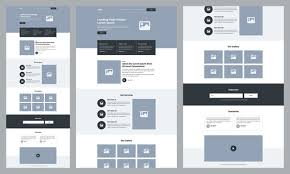
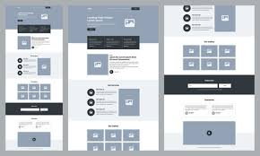

Case Study: OrangeHRM Automation Testing
This project involved automating functional test scenarios for OrangeHRM, a popular open-source Human Resource Management system.
Client: OrangeHRM (Open Source)
Industry: HR Software
Size: 100+ Employees
Website: orangehrm.com
Project Requirements
- Test login, user roles, leave management, and employee records modules
- Automate regression test suite using Selenium
- Ensure compatibility across Chrome, Firefox, and Edge
- Generate test reports and log defects using Jira
Project Overview
The goal of the project was to verify core functionalities of OrangeHRM through manual testing followed by automation using Selenium WebDriver. Modules tested included user authentication, employee management, time tracking, and leave applications. Test scenarios were derived from functional specifications and exploratory analysis.
The Challenge
Ensuring high test coverage across modules in a limited timeframe while adapting to frequent UI changes posed a significant challenge. Maintaining reusable test scripts, organizing test data, and simulating real-world user scenarios added to the complexity.
The Approach & Solution
Manual test cases were documented using Excel and then automated using Selenium WebDriver (Java) with TestNG. The framework was data-driven and integrated with Extent Reports for test result visibility. Jira was used to log and track bugs. Cross-browser testing was implemented using Selenium Grid to ensure platform compatibility.
 

The Results
Successfully automated 90% of test cases covering all major modules. Reduced regression testing time by 70%. Reported and verified 30+ issues during the cycle. The project significantly improved software reliability and reduced manual effort for future releases.